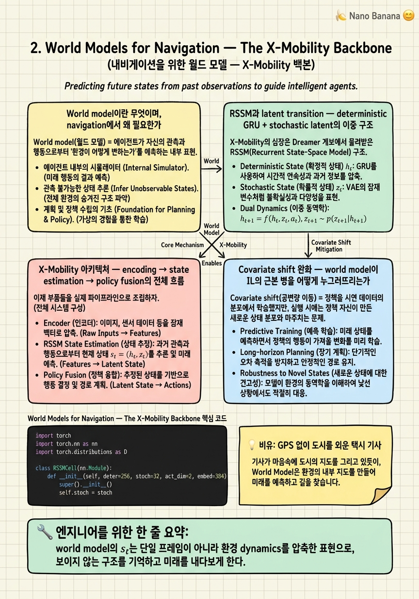

World Models for Navigation — The X-Mobility Backbone

🎯 학습 목표
- world model이 navigation에서 covariate shift를 완화하는 원리를 설명할 수 있다
- latent state transition (s_t = f(s_{t-1}, a_{t-1}))의 역할을 이해한다
- X-Mobility의 observation encoding → state estimation → policy fusion 흐름을 그릴 수 있다
- Dreamer/RSSM 계보와의 연결을 설명할 수 있다
- 왜 frozen world model이 COMPASS 성능의 진짜 열쇠인지 안다
1챕터에서 우리는 COMPASS가 '데이터 스케일링' 대신 '구조적 분리'를 택했고, 그 구조의 첫 번째 층이 공통 dynamics를 학습하는 world model이라는 좌표를 잡았다. 이번 챕터는 바로 그 첫 번째 층 — X-Mobility(arXiv:2410.17491) — 를 해부한다. COMPASS는 X-Mobility를 IL base로 삼아 얼려두고(frozen) 사용한다. 따라서 X-Mobility가 무엇을 어떻게 학습했는지를 이해하지 못하면 COMPASS 전체가 왜 작동하는지 알 수 없다.
X-Mobility는 2024년 10월에 나온, COMPASS와 대부분 저자가 겹치는 선행 연구다. 한 문장으로 요약하면 autoregressive world model + velocity-prediction policy다. 즉 (1) RGB 이미지·로봇 상태·경로를 받아 환경의 dynamics를 latent state로 압축하는 world model과, (2) 그 latent를 읽어 velocity command를 내는 policy가 결합된 구조다. 이 설계의 계보는 Dreamer/DreamerV3로 거슬러 올라가며, 핵심 부품인 RSSM(Recurrent State-Space Model)을 그대로 계승한다.
이번 챕터의 목표는 세 가지다. 첫째, world model이 navigation에서 어떻게 covariate shift를 완화하는지 — 즉 왜 단순 IL보다 강한 prior를 주는지 — 를 원리적으로 이해한다. 둘째, latent transition \(s_t=f_\phi(s_{t-1},a_{t-1})\)과 observation encoding→state estimation→policy fusion의 데이터 흐름을 그릴 수 있게 된다. 셋째, 그리고 가장 중요하게, 왜 이 world model을 얼려두는 것이 COMPASS 성능의 진짜 열쇠인지 — RL-from-scratch가 왜 실패하는지를 통해 — 를 못 박는다.
핵심 내용
World model이란 무엇이며, navigation에서 왜 필요한가
World model(월드 모델) = 에이전트가 자신의 관측과 행동으로부터 '환경이 어떻게 변하는가'를 예측하는 내부 모델. 즉 현재 상태와 행동이 주어지면 다음 상태(그리고 그에 상응하는 관측)를 예측하는 \(s_{t}\!\approx\! f(s_{t-1}, a_{t-1})\)를 학습한 것이다.
왜 navigation에 이것이 필요한가? 핵심은 부분 관측성(partial observability)과 시간적 일관성이다. 로봇의 한 프레임 RGB 이미지는 그 순간의 단면일 뿐, 벽 뒤의 통로나 방금 지나친 장애물, 자신의 진행 관성 같은 것을 담지 못한다. 정책이 단일 프레임만 보고 행동하면 매 순간 근시안적으로 반응할 수밖에 없다. world model은 과거를 압축한 latent state를 유지함으로써 '지금 안 보이지만 존재하는' 환경 구조를 기억하고, 행동이 미래에 미칠 결과를 내다보게 한다.
X-Mobility의 latent state \(s_t\)는 정확히 이 역할을 한다. 논문의 표현으로, \(s_t\)는 environment dynamics를 압축한 표현이다. 여기에는 정적 기하(벽·통로·장애물의 배치)뿐 아니라 로봇 자신의 운동 상태와 그것이 어떻게 전개되는지가 함께 담긴다. 이 latent가 있기에 정책은 '한 장의 그림'이 아니라 '흘러가는 세계의 요약'을 입력으로 받는다.
결정적으로, world model은 관측을 재구성(reconstruction)하도록 학습된다. \(s_t\)로부터 원래 관측을 되살리는 \(\hat{o}_t=g_\psi(s_t)\)를 잘하려면, latent가 관측의 핵심 정보를 손실 없이 담아야 한다. 이 self-supervised 목표 덕분에 world model은 보상이나 전문가 라벨 없이도, 방대한 주행 데이터만으로 '세계를 이해하는' 표현을 학습한다. 이것이 바로 COMPASS가 활용할 강한 prior의 원천이다.
RSSM과 latent transition — deterministic GRU + stochastic latent의 이중 구조
X-Mobility의 심장은 Dreamer 계보에서 물려받은 RSSM(Recurrent State-Space Model)이다. RSSM의 핵심 아이디어는 latent state를 하나의 벡터가 아니라 deterministic 부분과 stochastic 부분의 결합으로 나누는 것이다.
Deterministic state(결정적 상태) \(h_t\) = 과거 전체를 요약하는 순환(recurrent) 경로로, 보통 GRU로 구현된다. \(h_t = \text{GRU}(h_{t-1}, [z_{t-1}, a_{t-1}])\)처럼, 이전 요약과 이전 stochastic latent, 이전 행동을 받아 갱신된다. 이 결정적 경로가 시간적 기억의 '뼈대'로, 예측을 안정적이고 gradient가 멀리 흐르게 한다.
Stochastic state(확률적 상태) \(z_t\) = 그 시점의 불확실성과 다양한 가능성을 담는 확률 변수다. 결정적 \(h_t\)를 조건으로 한 prior \(p(z_t\mid h_t)\)와, 실제 관측을 반영한 posterior \(q(z_t\mid h_t, o_t)\) 두 갈래로 추론된다. 이 stochasticity가 있기에 world model은 '다음에 무엇이 나타날지 확실하지 않다'는 것을 표현할 수 있다.
전체 transition을 논문 표기로 쓰면 \(s_t=f_\phi(s_{t-1}, a_{t-1})\)이고, 여기서 \(s_t\)는 \((h_t, z_t)\)의 결합이다. 학습은 두 항의 균형으로 이루어진다 — 관측을 잘 재구성하는 reconstruction 항과, prior와 posterior를 가깝게 만드는 KL 항(representation/dynamics learning). KL 항이 핵심인 이유는, 관측 없이 prior만으로도 posterior에 가깝게 예측할 수 있어야 world model이 '상상(imagination)' 즉 관측 없는 미래 rollout을 할 수 있기 때문이다.
이 이중 구조의 실익은 무엇인가? deterministic 경로는 긴 시야의 일관성과 안정적 gradient를, stochastic 경로는 부분 관측 하의 불확실성 표현을 각각 담당한다. navigation처럼 '보이지 않는 것을 기억하고 불확실한 미래를 다뤄야 하는' 문제에서 이 분업이 정확히 필요한 두 능력이다.
X-Mobility 아키텍처 — encoding → state estimation → policy fusion의 전체 흐름
이제 부품들을 실제 파이프라인으로 조립하자. X-Mobility는 이질적 입력을 각각 인코딩해 하나의 latent로 융합하고, 그 latent에서 행동을 낸다. 흐름은 세 단계다.
(1) Observation encoding(관측 인코딩). 서로 다른 modality를 각자의 인코더로 처리한다. RGB 이미지 \(I_t\)는 DINOv2 image encoder로 강력한 self-supervised visual feature로 변환된다 — DINOv2를 쓴 것은 처음부터 CNN을 학습하는 대신 이미 풍부한 기하·의미 표현을 가진 pretrained backbone을 빌려 데이터 효율과 sim-to-real 일반화를 높이려는 선택이다. 로봇 상태(속도 등)는 MLP로, 경로/목표 \(g_t\)는 궤적을 폴리라인으로 다루는 VectorNet 스타일 인코더로 처리된다. 이렇게 세 갈래 feature가 만들어진다.
(2) State estimation(상태 추정). 인코딩된 feature들을 self-attention으로 융합해 관측 임베딩을 만들고, 이를 RSSM의 posterior 경로에 넣어 latent state \(s_t\)를 추정한다. 앞 절의 GRU 기반 transition이 여기서 돌며, 이전 \(s_{t-1}\)과 행동 \(a_{t-1}\), 그리고 현재 관측을 결합해 \(s_t=(h_t, z_t)\)를 낸다. 이 \(s_t\)가 '지금까지의 세계를 요약한' 표현이다.
(3) Policy fusion & action(정책 융합과 행동). 정책은 latent state와 경로 정보를 다시 결합한다. 논문 표기로, 경로 인코딩 \(r_t=f_\theta(g_t)\), 융합 \(p_t=\Phi(s_t, r_t)\), 그리고 행동 \(a_t=\pi^{IL}_\theta(p_t)\)다. 즉 world model이 준 세계 요약 \(s_t\) 위에, 지금 따라야 할 경로 \(r_t\)를 다시 얹어(fusion), 그로부터 velocity command를 예측한다. 이 정책은 전문가 시연을 모방하도록(IL) 학습된다.
전체를 한 줄로 그리면: \((I_t, v_t, g_t)\) → [DINOv2 · MLP · VectorNet] → self-attention → RSSM(\(s_t\)) → \(\Phi(s_t, r_t)\) → \(a_t=(v,\omega)\). 이 파이프라인 전체가 Carter 데이터셋으로 pretrain되고, edge(Jetson)에서 zero-shot sim-to-real로 돈다는 점이 X-Mobility의 실용적 강점이다. 그리고 COMPASS는 이 잘 학습된 파이프라인을 통째로 얼려 base로 삼는다.
Covariate shift 완화 — world model이 IL의 근본 병을 어떻게 누그러뜨리는가
Covariate shift(공변량 이동) = 정책을 시연 데이터의 분포에서 학습했지만, 실행 시에는 정책 자신이 만든 궤적을 따라가며 학습 때 못 본 상태로 점점 벗어나 오차가 누적되는 현상. 순수 IL(behavior cloning)의 고질적 실패 모드다(3챕터에서 본격적으로 다룬다). 여기서는 world model이 이 병을 어떻게 완화하는지에 초점을 둔다.
첫째, 표현의 강건성이다. 정책이 매 프레임의 raw 픽셀에 직접 반응하면 조금만 낯선 장면이 들어와도 출력이 크게 흔들린다. 하지만 world model의 latent \(s_t\)는 reconstruction과 dynamics 목표로 학습되어 '환경의 구조'를 담는 매끄러운 표현이다. 낯선 관측도 이 latent 공간에서는 익숙한 이웃으로 사영되기 쉬워, 분포에서 살짝 벗어나도 정책이 급격히 무너지지 않는다.
둘째, 시간적 예측이 표류를 억제한다. world model은 과거를 요약한 \(h_t\)를 유지하므로, 한 프레임이 흐릿하거나 이상해도 latent가 순간적 노이즈로 튀지 않고 축적된 문맥으로 보정한다. 즉 단일 관측에 대한 과민 반응이 줄어 오차 누적의 시작점이 억눌린다. X-Mobility가 covariate shift를 '미래 예측으로 완화한다'고 말하는 것이 이 지점이다 — 세계가 어떻게 전개될지 아는 모델은 낯선 상태에 처했을 때도 그럴듯한 다음을 추론해낸다.
다만 분명히 하자. world model이 covariate shift를 완전히 없애지는 못한다. IL로 학습된 정책은 여전히 시연 분포에 묶여 있고, world model은 그 위에서 표현을 강건하게 만들어 완화할 뿐이다. 바로 이 '완화하지만 해결은 못 함'이라는 잔여 gap이, COMPASS가 다음 층에서 Residual RL을 얹는 이유다. world model은 강한 출발점을 주지만, 각 embodiment의 실제 실행 분포에서 남는 오차는 환경과 상호작용하는 RL로만 메울 수 있다.
왜 frozen world model이 COMPASS의 진짜 열쇠인가 — RL-from-scratch의 실패가 주는 증거
이 챕터의 결론이자 COMPASS를 이해하는 급소가 여기 있다. COMPASS는 X-Mobility의 world model+IL base를 학습 중 얼려둔다(frozen). 왜 학습하지 않고 고정할까? 그리고 왜 이것이 성능의 진짜 열쇠일까?
가장 강력한 증거는 실패 실험이다. COMPASS 논문에 따르면, IL base가 주는 action 없이 latent만으로 RL을 from scratch로 돌리면 1000 episode를 돌려도 수렴에 실패한다. navigation의 보상은 희소하고(목표 도달까지 멀다) 탐색 공간은 방대해서, 아무 prior 없이 latent에서 곧바로 좋은 정책을 찾는 것은 사실상 불가능하다. 즉 world model이 준 latent는 '좋은 표현'이지만, 그 표현에서 행동으로 가는 좋은 매핑까지 공짜로 주지는 않는다.
그런데 X-Mobility의 IL base가 주는 velocity command를 출발 행동으로 삼으면 상황이 뒤집힌다. RL은 0에서 시작하는 대신 이미 그럴듯한 base action 근처에서 시작해, 각 embodiment에 맞는 얇은 보정(residual)만 탐색하면 된다. 이것이 4챕터의 Residual RL(\(a_t=a_t^{base}+a_t^{res}\))이며, frozen base가 이 residual 학습이 성립하기 위한 전제 조건이다. base가 흔들리면 residual이 조준할 기준점이 사라진다.
숫자가 이 구조의 위력을 증언한다. COMPASS의 specialist는 IL baseline(X-Mobility) 대비 success rate를 5배~40배 끌어올리고, weighted travel time(WTT)을 약 3배 개선한다. 이 거대한 이득은 '더 큰 모델'이나 '더 많은 데이터'가 아니라, 얼린 world model이라는 강한 prior 위에 residual을 얹는 구조에서 나온다. 만약 world model을 함께 fine-tune했다면 어땠을까? 각 embodiment의 RL 신호가 base 표현을 자기 쪽으로 끌어당겨, 나중에 여러 specialist를 하나의 generalist로 distill할 때 공유할 공통 기반이 부서졌을 것이다.
그래서 frozen이 열쇠다. 얼린 world model은 (1) RL이 수렴하도록 강한 action prior를 제공하고, (2) 모든 embodiment가 공유하는 안정된 공통 표현을 보존해 이후 distillation을 가능케 한다. 1챕터에서 말한 '큰 공통 추론 + 얇은 conditioning'이라는 철학이 여기서 구체적 메커니즘으로 실현되는 것이다. 다음 챕터부터 우리는 이 frozen base 위에서 IL의 한계(covariate shift)와 그 처방(Residual RL)을 차례로 파고든다.
💡 비유로 이해하기
한 도시를 수십 년 몬 베테랑 택시 기사를 상상해보자. 그는 창밖 한 장면만 봐도 '여기가 어디쯤이고, 이 골목을 꺾으면 무엇이 나오며, 지금 막히는 시간대인지'를 안다. 눈앞에 보이지 않는 도로 구조와 흐름이 그의 머릿속 '도시 모델'에 압축되어 있기 때문이다. 이 머릿속 모델이 바로 world model의 latent state \(s_t\)다 — 한 장의 사진이 아니라, 흘러가는 세계의 요약.
초보 기사(순수 IL 정책)는 다르다. 그는 오직 지금 보이는 것에만 반응하고, 낯선 골목에 들어서면 당황해 점점 엉뚱한 길로 빠진다 — 이것이 covariate shift다. 베테랑은 낯선 골목에서도 '이 도시라면 이쯤에 큰길이 있을 것'이라고 세계 모델로 추론해 회복한다. world model이 covariate shift를 완화한다는 말의 감각이 이것이다.
그리고 COMPASS의 'frozen'은 이렇게 비유된다. 이 베테랑 기사의 도시 지식은 건드리지 않고, 대신 그를 트럭·오토바이·자전거에 태워 각 탈것의 핸들 감각만 짧게 익히게 한다. 도시 지식(world model)을 매번 다시 배우게 하면 탈것마다 기억이 서로 오염되어, 나중에 '세 탈것 다 잘 모는 한 명'을 길러낼 공통 기반이 무너진다. 지식은 얼려 공유하고 감각만 얇게 얹는 것 — 그것이 frozen world model이 열쇠인 이유다.
💻 코드 예시
RSSM의 한 스텝 forward를 PyTorch로 구현해보자. 핵심은 latent가 deterministic \(h_t\)(GRU)와 stochastic \(z_t\)(reparameterized Gaussian)로 나뉘고, 관측이 없을 때의 prior와 관측을 반영한 posterior 두 경로가 있다는 점이다. 이 한 셀이 X-Mobility state estimation의 심장이다.
import torch
import torch.nn as nn
import torch.distributions as D
class RSSMCell(nn.Module):
def __init__(self, deter=256, stoch=32, act_dim=2, embed=384):
super().__init__()
self.stoch = stoch
# (z_{t-1}, a_{t-1}) -> GRU 입력
self.pre = nn.Sequential(nn.Linear(stoch + act_dim, deter), nn.ELU())
self.gru = nn.GRUCell(deter, deter)
# prior: h_t -> z_t 분포 (관측 없이 예측)
self.prior = nn.Linear(deter, 2 * stoch)
# posterior: (h_t, o_t) -> z_t 분포 (관측 반영, embed는 DINOv2 등 융합 feature)
self.post = nn.Linear(deter + embed, 2 * stoch)
def _dist(self, params):
mean, std = params.chunk(2, dim=-1)
return D.Independent(D.Normal(mean, torch.softplus(std) + 0.1), 1)
def forward(self, h_prev, z_prev, a_prev, obs_embed=None):
x = self.pre(torch.cat([z_prev, a_prev], dim=-1))
h = self.gru(x, h_prev) # deterministic transition
prior = self._dist(self.prior(h)) # p(z_t | h_t)
if obs_embed is not None: # posterior (학습/추정 시)
post = self._dist(self.post(torch.cat([h, obs_embed], dim=-1)))
z = post.rsample()
kl = D.kl_divergence(post, prior).mean() # dynamics/representation loss
return h, z, kl
z = prior.rsample() # imagination (관측 없이 rollout)
return h, z, Noneforward의 첫 두 줄이 deterministic transition \(h_t=\text{GRU}(h_{t-1}, [z_{t-1}, a_{t-1}])\)이다. 이전 stochastic latent와 행동을 GRU에 넣어 시간적 기억의 뼈대 \(h\)를 갱신한다 — 이 경로가 '보이지 않는 것을 기억하는' 능력의 원천이다.
그 다음이 RSSM의 이중성이다. prior는 관측 없이 \(h_t\)만으로 \(z_t\) 분포를 예측하고, post는 여기에 융합된 관측 feature obs_embed(DINOv2·MLP·VectorNet을 self-attention으로 합친 것)를 더해 더 정확한 posterior를 낸다. obs_embed=None이면 posterior 없이 prior로만 샘플링하는데, 이것이 바로 관측 없이 미래를 굴리는 imagination 경로다.
kl = KL(post || prior)가 학습의 급소다. 이 항을 줄이면 관측 없는 prior가 관측 있는 posterior에 가까워져, world model이 실제 관측 없이도 그럴듯한 미래를 예측하게 된다 — 4챕터에서 RL이 이 상상 rollout 위에서 값싸게 탐색할 수 있는 근거다. rsample()(reparameterization)을 쓴 것은 이 stochastic 경로로 gradient가 흐르게 하기 위함이다. COMPASS에서는 이 셀 전체가 frozen되어, 학습되는 것은 오직 위에 얹힌 residual policy뿐이다.
🏭 현업에서의 평가
✅ 시니어가 보는 것
- RSSM의 deterministic(GRU)과 stochastic(latent) 분업이 각각 어떤 능력(장기 일관성 vs 불확실성 표현)을 담당하는지 설명하는가
- world model이 covariate shift를 '완화'할 뿐 '해결'하지 못한다는 경계를 정확히 긋고, 그래서 residual이 필요하다고 연결하는가
- 왜 base world model을 frozen하는지를 '공통 표현 보존 + RL 수렴 prior'라는 두 축으로 설명하는가
- DINOv2 같은 pretrained encoder를 쓰는 이유를 데이터 효율·sim2real 일반화로 정당화하는가
- reconstruction/KL 목표가 latent 품질과 imagination 능력에 어떻게 연결되는지 아는가
⚠️ 레드 플래그
- world model을 '그냥 미래 프레임 예측하는 것'으로만 이해하고 정책·표현학습과의 연결을 놓침
- RSSM에서 deterministic과 stochastic을 왜 나누는지 설명 못 하고 '그냥 그렇게 한다'고 함
- frozen을 단순 '연산 절약'으로 오해하고 공통 표현 보존/distillation 가능성과 연결하지 못함
- RL-from-scratch가 실패한다는 반례를 모른 채 'latent만 있으면 RL로 다 된다'고 단정
- KL 항의 역할(prior≈posterior → imagination)을 모르고 reconstruction만 언급
🎤 예상 인터뷰 질문
- 순수 behavior cloning 대비 world model 기반 정책이 covariate shift에 더 강한 이유를 표현·시간예측 두 관점으로 설명하라. 그럼에도 남는 한계는 무엇인가?
- COMPASS는 world model을 학습 중 얼려둔다. 만약 각 embodiment의 RL 신호로 world model을 함께 fine-tune하면 무엇이 깨지는지, 특히 이후 distillation 관점에서 논하라.
- RSSM에서 latent를 deterministic h와 stochastic z로 분리하는 설계의 이득을 navigation의 부분 관측성과 연결해 설명하라.
✨ 핵심 요약
latent state = 흘러가는 세계의 요약
world model의 sₜ는 단일 프레임이 아니라 환경 dynamics를 압축한 표현으로, 보이지 않는 구조를 기억하고 미래를 내다보게 한다.
RSSM의 이중 구조
deterministic GRU 경로(hₜ)는 장기 일관성과 안정적 gradient를, stochastic latent(zₜ)는 부분 관측 하의 불확실성을 담당한다.
prior≈posterior가 imagination을 연다
KL 항으로 관측 없는 prior를 관측 있는 posterior에 맞추면, world model이 관측 없이 미래를 rollout하는 상상 능력을 얻는다.
X-Mobility의 3단 흐름
관측 인코딩(DINOv2·MLP·VectorNet) → self-attention 융합·RSSM state 추정 → 경로와 fusion 후 velocity 예측으로 이어진다.
world model은 covariate shift를 완화한다
강건한 latent 표현과 시간적 예측이 낯선 상태에서의 급격한 붕괴와 오차 누적을 억제하지만, 완전히 없애지는 못한다.
frozen이 열쇠다
얼린 world model은 RL 수렴을 위한 action prior를 주는 동시에 모든 embodiment가 공유할 공통 표현을 보존해 이후 distillation을 가능케 한다.
RL-from-scratch는 실패한다
IL base action 없이 latent만으로 RL을 돌리면 1000 episode에도 수렴하지 못해, 강한 prior의 필요성을 반증적으로 증명한다.
구조가 데이터를 이긴다
specialist의 5x~40x SR·3x WTT 향상은 더 큰 모델이 아니라 frozen prior 위에 residual을 얹는 구조에서 나온다.